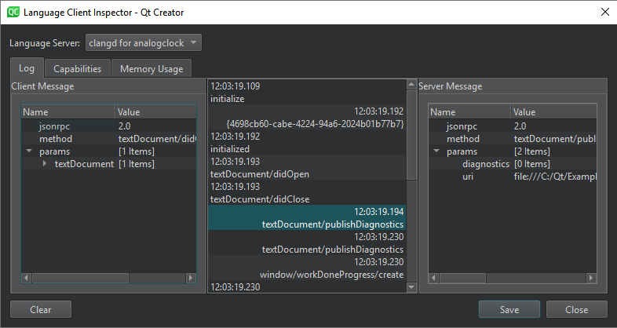
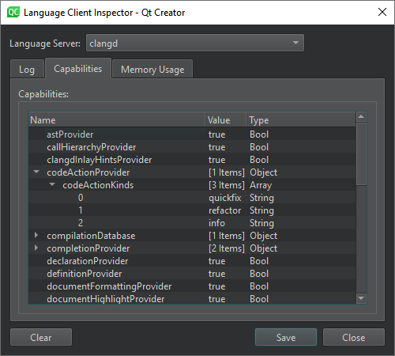
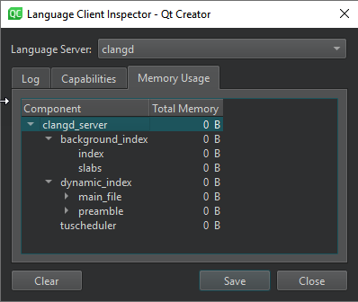

Inspect language clients
Qt Creator sends messages (requests) to a language server and receives responses that have the requested information if the language server is capable of handling the requests. To inspect the communication between Qt Creator and language servers and to view server capabilities, select Tools > Debug Qt Creator > Inspect Language Clients.

Select a running language server in Language Server. The information displayed depends on the language server.
For a generic language server, the value of the Startup behavior field in the language server preferences determines when the server is started. To restart language servers, select  on the editor toolbar, and go to Restart.
on the editor toolbar, and go to Restart.
Log displays additional information about the selected log entry. You can see the Content length and MIME type of a Client Message and Server Message, as well as inspect the data sent between Qt Creator and the language server.
To remove old entries, select Clear.
Check language server capabilities
In Capabilities, you can check whether a language server is capable of a specific task. You cannot modify the server capabilities in this dialog.
You can view the Name, Value, and Type of the capability.

For some language servers, Dynamic Capabilities lists the Methods and Options available.
Inspect memory usage
For a clangd server, you can inspect the total amount of memory used by a particular component in Memory Usage.

See also How To: Manage Language Servers and Language Servers.